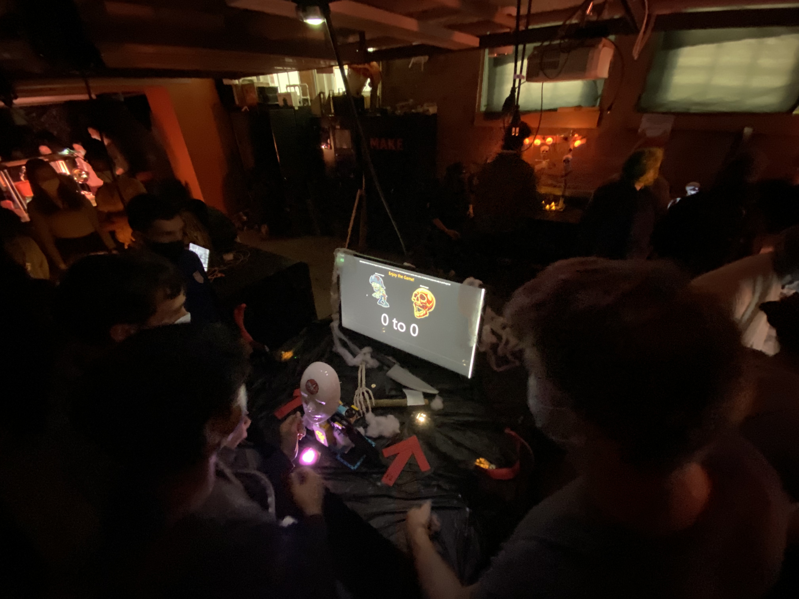

Project 10: Halloween Game
About
Our tenth project was to create a spooky interactive experience for our university makerspace's haunted house showcase. This was a group project. I worked with four other classmates to brainstorm, design, and then build and code a halloween themed reaction time game. Our two person game could be controlled entirely using spikePRIME sensors, yet ran in a web browser on a webpage built from HTML and JavaScript. The goal of the game was to hit your sensor when the two images shown on the screen matched before the other player was able to. If you did, you got a point. When one player had either three points, or was three points ahead of the other player, they won. The game would distribute a starburst candy to the winner, and a robotic knife would slam down, 'chopping off the hand' of the loser. If one of the players hit their sensor before the right image showed up, their hand would also be chopped.
Pictures


Conclusion
Group projects are always difficult, yet we were able to effectively split up the work for this one. I worked on the input sensors and game design, as well as implementing it with our web application. Other group members built the hand choppers and the candy dispenser, as well as the web application itself. I was amazed at how well all the pieces we built separately came together to create a fun game, and I loved being able to show our project to strangers and see their reactions.
Back to Project List